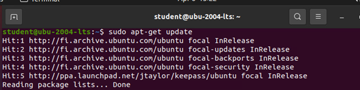

KeePass on salasanojen hallintaohjelma, joka lukitsee kaikki käyttäjätunnukset ja salasanat yhden salasanan taakse. Kaikki tunnukset voidaan tallentaa yhteen tietokantaan, joka lukitaan salasanalla tai avainlevyllä. KeePass on avoimen lähdekoodin ilmainen salasanojen hallintatyökalu, jota suositellaan monien tietoturva-asiantuntijoiden toimesta. Tietokanta on salattu parhailla ja turvallisimmilla salaus algoritmeillä (AES ja Twofish). KeePassia on selkeä ja helppo käyttää.
Rekisteröi KeePass arkistoon
Ensimmäisessä vaiheessa lisätään jtaylor / keepass-arkisto järjestelmään. Seuraava komento lisää arkiston lähteisiin, joten Ubuntu tietää etsiä päivityksiä kyseiseltä PPA:lta sekä virallisilta Ubuntu-lähteiltä. Syötä terminaaliin:sudo apt-add-repository ppa:jtaylor/keepass
Päivitä nyt tietokanta siitä, mitkä paketit voidaan asentaa ja mistä ne voidaan asentaa. Tällöin apt-get näkee äskettäin lisätyn PPA:n ja huomaa, että ppa: jtaylor / keepassilla on uusin KeePass2-versio, josta se tietää, joten se tekee muistiinpanon KeePassin asentamasta PPA:sta seuraavan kerran, kun joku pyytää. Asenna se komennolla:
sudo apt-get update

Asenna KeePass2
Nyt kun KeePass-arkisto on nyt käytettävissä, apt-get pystyy ratkaisemaan riippuvuutemme asentamalla viimeisimmän version säilöstä saatavilla olevasta keepassista seuraavalla terminaalikomennolla:sudo apt-get install keepass2
Tämä kestää jonkin aikaa, kunnes asennus on valmis, voidaan etsiä KeePass-sovellusta ubuntu-kojelaudasta: